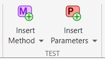
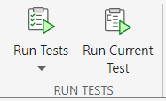

Insert Test Code Using Editor
MATLAB® lets you create and run test classes interactively. You can create a test class from a template, and then use the code insertion options on the MATLAB Toolstrip to add methods and parameterization properties to the class. You can choose whether to add a method or property at the test level, method-setup level, or class-setup level.
This example shows how to use the MATLAB Editor to write and run a simple parameterized test for a function. To
set up the example, define the cleanData function in a file
named cleanData.m in your current folder. The function accepts a
numeric array and returns a cleaned and sorted version of the array. It vectorizes
the array, removes the NaN, 0, and
Inf entries, and finally sorts the
vector.
function y = cleanData(X) y = X(:); % Vectorize the array y = rmmissing(y); % Remove NaN entries % Remove 0 and Inf entries idx = (y == 0 | y == Inf); y = y(~idx); % If the vector is empty, set it to eps if isempty(y) y = eps; end y = sort(y); % Sort the vector end
Create Test Class
To test the cleanData function, create a test class from a
template. On the Editor tab, select New > Test Class. Name the class CleanDataTest, and save it in a file
named CleanDataTest.m in your current folder.
The template provides a TestClassSetup
methods block, a TestMethodSetup
methods block, and a Test
methods block that defines a simple Test
method. The test class in this example requires one test-level parameterization
property and two parameterized Test methods. Because it does not
require any setup and teardown code, remove the TestClassSetup
and TestMethodSetup
methods blocks.
classdef CleanDataTest < matlab.unittest.TestCase methods (Test) % Test methods function unimplementedTest(testCase) testCase.verifyFail("Unimplemented test"); end end end
Add Parameters and Methods
With a test class definition file open, you can use the Test section on the Editor tab to insert code that defines a method or parameterization property:
To insert code that defines a
Testmethod, click . To access the full list of options, click Insert Method. These options let you add a method at the test level, method-setup level, or class-setup level. You can change the name of the method and implement it after it is inserted.To insert code that defines a test-level parameterization property, click . To access the full list of options, click Insert Parameters. These options let you add a property at the test level, method-setup level, or class-setup level. You can change the name and value of the property after it is inserted.

When you insert code for a method or property at the test level, method-setup
level, or class-setup level, the code is added to the methods or
properties block with the corresponding attribute. If the
block does not exist, MATLAB creates it.
Add data Property
To test the cleanData function with different inputs, add
a test-level parameterization property to the CleanDataTest
class. With the test class code visible in the Editor, go to the
Editor tab and in the Test
section, click . MATLAB adds a property in a properties block with the
TestParameter attribute. Rename the property as
data and initialize it using a structure with four
fields. The testing framework generates parameter names and values from the
property value. For more information about parameterized tests, see Use Parameters in Class-Based Tests.
classdef CleanDataTest < matlab.unittest.TestCase properties (TestParameter) data = struct("empty",[],"scalar",0, ... "vector",[13 NaN 0],"matrix",[NaN 2 0; 1 Inf 3]); end methods (Test) % Test methods function unimplementedTest(testCase) testCase.verifyFail("Unimplemented test"); end end end
Add sortTest Method
The test class template includes a simple Test method named
unimplementedTest. Modify this method to test an aspect of
the cleanData function:
Rename the method as
sortTest.Parameterize the method by passing the
dataproperty as the second input argument to the method.Add code to the method to verify that the
cleanDatafunction correctly sorts the array passed to it.
classdef CleanDataTest < matlab.unittest.TestCase properties (TestParameter) data = struct("empty",[],"scalar",0, ... "vector",[13 NaN 0],"matrix",[NaN 2 0; 1 Inf 3]); end methods (Test) % Test methods function sortTest(testCase,data) actual = cleanData(data); testCase.verifyTrue(issorted(actual)) end end end
Add nonemptyTest Method
To test if the cleanData function returns a nonempty
value, add another Test method to the class by clicking
in the Test section.
Implement the method by following these steps:
Rename the method as
nonemptyTest.Parameterize the method by passing the
dataproperty as the second input argument to the method.Add code to the method to verify that the
cleanDatafunction returns a nonempty value.
Save the file. This code provides the complete contents of the
CleanDataTest class.
classdef CleanDataTest < matlab.unittest.TestCase properties (TestParameter) data = struct("empty",[],"scalar",0, ... "vector",[13 NaN 0],"matrix",[NaN 2 0; 1 Inf 3]); end methods (Test) % Test methods function sortTest(testCase,data) actual = cleanData(data); testCase.verifyTrue(issorted(actual)) end function nonemptyTest(testCase,data) actual = cleanData(data); testCase.verifyNotEmpty(actual) end end end
Run Tests in Test Class
You can run the tests in the CleanDataTest class interactively in
the Editor or in the Test
Browser app. For example, with the test class code visible in the Editor,
go to the Editor tab and in the Run Tests
section, click . In this example, all the tests pass.

For more information on how to run tests and customize your test run interactively, see Run Tests in Editor and Run Tests Using Test Browser.